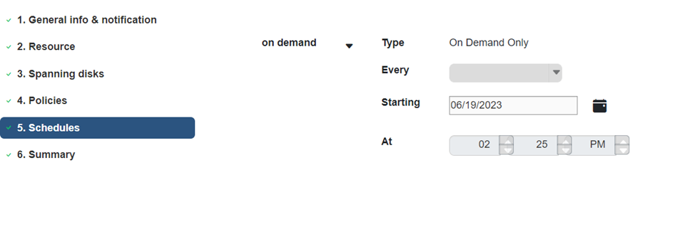

開始使用
開始使用
建立資源群組
 建議變更
建議變更
資源群組是您要保護的虛擬機器和資料存放區的容器。
對於所有資源群組、請勿新增處於無法存取狀態的虛擬機器。雖然可以建立包含無法存取的虛擬機器的資源群組、但該資源群組的備份將會失敗。
您可以隨時從資源群組新增或移除資源。
-
備份單一資源
若要備份單一資源（例如、單一虛擬機器）、您必須建立包含該單一資源的資源群組。
-
備份多個資源
若要備份多個資源、您必須建立包含多個資源的資源群組。
-
最佳化Snapshot複本
若要最佳化 Snapshot 複本、您應該將與同一個磁碟區相關聯的虛擬機器和資料存放區分組到一個資源群組中。
-
備份原則
雖然不需要備份原則就能建立資源群組、但只有在資源群組附加至少一個原則時、才能執行排程的資料保護作業。您可以使用現有原則、也可以在建立資源群組時建立新原則。
-
相容性檢查
建立資源群組時、虛擬機器的 BlueXP 備份與還原會執行相容性檢查。不相容的原因可能是：
-
VMDK 位於不受支援的儲存設備上。
-
共用 PCI 裝置已連接至虛擬機器。
-
-
在 BlueXP 虛擬機器備份與還原的左導覽器窗格中、按一下 * 資源群組 * 。
-
在 * 資源群組 * 頁面上、按一下 * 建立 * 以啟動精靈。

這是建立資源群組最簡單的方法。不過、您也可以執行下列其中一項、以單一資源建立資源群組：
-
若要為一部虛擬機器建立資源群組、請按一下功能表：功能表 [ 主機和叢集 ] 、然後在虛擬機器上按一下滑鼠右鍵、然後選取 BlueXP 備份和還原 VM 、然後按一下 * 建立 * 。
-
若要為單一資料存放區建立資源群組、請按一下功能表：功能表 [ 主機和叢集 ] 、然後在資料存放區上按一下滑鼠右鍵、然後選取 BlueXP 備份和 VM 恢復、然後按一下 * 建立 * 。
-
-
在精靈的 * 一般資訊與通知 * 頁面上、輸入所需的值。
-
在「資源」頁面上、執行下列動作：
對於此欄位… 執行此操作… 範圍
選取您要保護的資源類型：
-
資料存放區
-
虛擬機器
資料中心
瀏覽至虛擬機器或資料存放區
可用的實體
選取您要保護的資源、然後按一下 > 、將您的選擇移至選取的實體清單
當您按一下 * 下一步 * 時、系統會先檢查 BlueXP 備份與還原是否有管理、並與所選資源所在的儲存設備相容。
如果顯示訊息 Selected <resource-name> is not BlueXP backup and recovery for VMs compatible 、則表示所選資源與虛擬機器的 BlueXP 備份和還原不相容。
-
-
在 * 擴充磁碟 * 頁面上、針對跨多個資料存放區具有多個 VMDK 的虛擬機器、選取一個選項：
-
永遠排除所有跨距資料存放區[這是資料存放區的預設值。]
-
一律包含所有跨距資料存放區 [ 這是虛擬機器的預設值。 ]
-
手動選取要納入的跨距資料存放區。
-
-
在「原則」頁面上、選取或建立一或多個備份原則、如下表所示：
使用… 執行此操作… 現有原則
從清單中選取一或多個原則。
新原則
-
按一下「 * 建立 * 」。
-
完成「新增備份原則」精靈、返回「建立資源群組」精靈。
-
-
在「排程」頁面上、為每個選取的原則設定備份排程。
在「開始時間」欄位中、輸入零以外的日期和時間。日期格式必須為日 / 月 / 年。您必須填寫每個欄位。虛擬機器的 BlueXP 備份與還原會在部署虛擬機器的 BlueXP 備份與還原時區中建立排程。您可以使用 BlueXP 備份與還原來修改 VM GUI 的時區。

-
檢閱 * 摘要 * 、然後按一下 * 完成 * 。
在按一下 [ 完成 ] 之前，您可以回到精靈中的任何頁面並變更資訊。
按一下 [ 完成 ] 之後，新的資源群組就會新增到資源群組清單中。

如果備份中任何虛擬機器的停止作業失敗、則即使選取的原則已選取虛擬機器一致性、備份仍會標示為「不一致的虛擬機器」。在這種情況下、有些虛擬機器可能已成功停用。